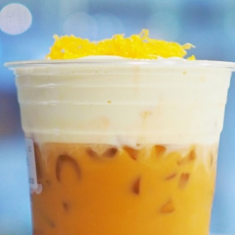
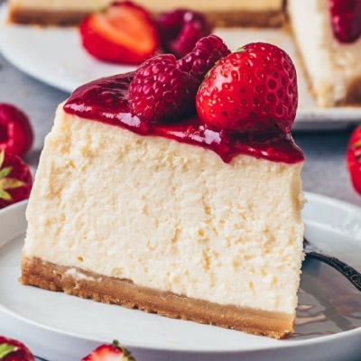
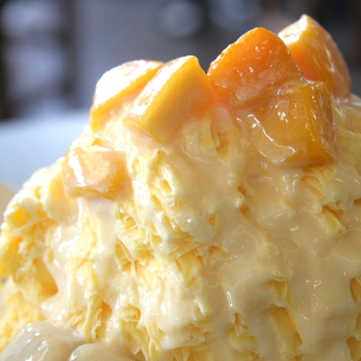

Charlotte's Sweets Shop was opened on December 19, 2013. Charlotte grew up in the city of
Mitakihara, Japan. She was always determined and worked hard to get what she wanted.
She had an immense talent for baking sweets at the young age of 8 years old. Her aunt,
Mami Tomoe, saw this potential in her and opened up Charlotte's Sweets Shop to share her
desserts with the world. Unfortunately, Charlotte passed away a few years later.
Ms. Tomoe continued to run the shop in honor of his late sister. The specialty of the shop
are cheese themed desserts since cheese was always Charlotte's favorite.
Menu
Charlotte's Sweets serves a variety of cheese themed dishes, with the Strawberry Cheese Float
as the specialty. This specialty item comes in the following flavors: original, vanilla bean,
chocolate, honeydew, strawberry, hazelnut, and pistachio. We also have an assortment of cakes
and pies available on display at the shop.
This is one of Ms. Tomoe's favorite dishes and it's very simple to prepare.
"We recommend you eat it alongside some fruity tea. Our personal favorite is apricot tea; perfect for the spring!"
Ingredients
24oz. cream cheese
1 1/3 cup granulated sugar
1 cup sour cream
1 tsp vanilla extract
2 tsp lemon juice
1 1/2 cups graham cracker crumbs
5 tsb melted butter
Let the ingredients sit until they are room temperature.
Cold ingredients will result in a chunky batter.
Instructions
Mixed the crushed graham crackres with 1/3 cup granulated sugar and the melted butter.
Mix until the mixture is even. The result will be thick, sandy, and coarse.
Pack crust mixture tightly to the bottom of the pan.
Beat the heavy cream in a bowl until stiff peaks form to create whipping cream.
Beat all remaining ingradients in a separate bowl.
Fold the whipping cream into the other bowl until the mixture is smooth.
Refridgerate for 6-8 hours or overnight. Refridgerating for at least 12 hours will
result in a sturdier cheesecake.
Adt toppings.
Now your beautiful, simple cheesecake is ready to serve!
Lastest News
Releasing a Cookbook
Posted by I. Tamaki,
Background
Charlotte's Sweets Shop is celebrating its 7 year anniversary this year. This is an important
number to Ms. Tomoe and the staff since it was at age 7 when Charlotte was diagnosed with an incurable illness and
only a year later that she passed away. Although unfortunate, she created something special. A shop, a community, and
delicious treats to share with the world. This shop wouldn't exist without her. She is gone, but her
memory still lives on says Ms. Tomoe, the shop owner.
We would like to honor her memory by releasing a cookbook filled with dishes, many of which were created by Charlotte.
Although a child, Charlotte was incredibly talented, in fact, more talented than most adults in the art of
baking and creating new recipes. I joined as a staff member 2 years ago, so I was not fortunate enough to have ever met
Charlotte in person. However, I have heard many stories of what a lovely young girl she was, and I could only
dream to have been able to meet such a wonderful person in my lifetime. Although I am quite new compared to
the staff members who have been working here for nearly the entire time the shop has been opened, I have been
treated as nothing but a close friend and family member in this community. This same love is poured into the
desserts we serve. Many of the treats we sell are original dishes by Charlotte and we know many of you are
excited to be able to create some of these dishes at home.
The book titled A Taste of Charlotte will be released on ,
the same day this shop opened 7 years ago. Please look forward to it!
Featured Recipes
The following are some of the recipes that will be available in the cookbook. We list the times we serve
these items in our shop which is also the best time to eat this dessert!
Signature Cheese Float
The specialty item at our shop and Charlotte's personal favorite!
(All year-round)
Strawberry Cheesecake
A creamy, fruity, delicious dessert!
(All year-round)
Lemon Square
A light citrus tang that is perfect for the summer and Ms. Tomoe's favorite!
(Summer)
Tea Cookies — new item!
A must have with a cup of black tea!
(Spring)
Taro Shaved Ice — new item!
A cooling and refreshing dessert for a hot day!
(Summer)
itamaki@charlottessweets.com
(999)-999-9997
Opening a Sister Location
Posted by M. Tomoe,
This week, the staff and business partners of Charlotte's Sweets Shop are excited to announce
our expansion into the fine dining business. We will be opening up a restaurant in Kamihama city
next month called Soul Gem. Our little shop has many talented members who are not only
well versed in baking, but in cooking delicious savory dishes. We hope that those of you living in
or visiting the Kamihama area will look out for our restaurant in the months to come.
This project is being led by our trusted staff member, Yachiyo Nanami, who has been with us for the past
five years. She is a skilled cook who specializes in steamed and grilled dishes.
On , we will be hosting a celebration at Charlotte's Sweets
Shop to celebrate Yachiyo's fifth anniversary. Yachiyo is also taking this as an opportunity to invite
anyone who has questions about this project. Those who have any questions about the project are free
to pop by and ask. We will be handing out free pastries to those who vists. Please visit us on that joyous day!
mtomoe@charlottessweets.com
(999)-999-9998
Warning: Please do not visit the site of the new restaurant as it is still under construction. We would like to avoid
any possible injuries that might occur to those who were not permitted on site and without the proper construction equipment.
Gallery
A collection of our most popular desserts! We offer a variety of baked-goods and sweet drinks both cold and warm, perfect for every season!
Signature Cheese Floats

Our shop is most notable for our delicious signature cheese floats, a refreshing smoothie covered with a creamy, whipped sweet cheese topping.
Delicious Cheesecakes

People visit from all over to enjoy a slice of our cheesecakes.
We handpick our fruit from the local market to provide a dessert made with the freshest ingredients.
Our famous strawberry cheesecake is a must-try!
Refreshing Shaved Ice

Our shaved ice are made with all natural ingredients. The delectable flavors in this dish comes from the toppings.
The perfect blend of fruits, taro, beans, etc. make for a memorable experience for your taste buds.